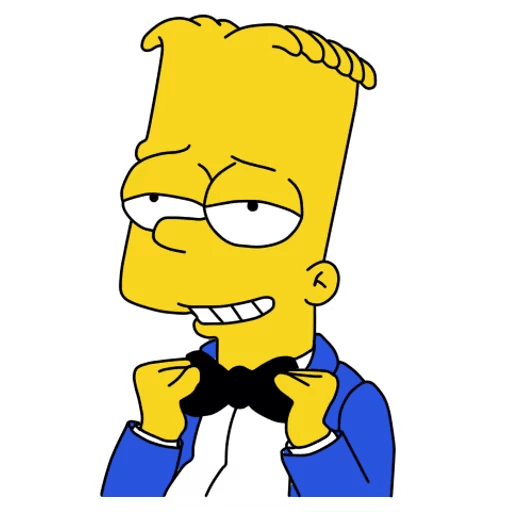

Bart Simpson
Значимые события в жизни
- Барт дважды получал водительские права:
- В серии «Bart Gets an F» помог Мартину Принсу стать популярнее
- Стал примером для всего города в серии «Bart's Inner Child»
- Был сбит машиной мистера Бёрнса в серии «Bart Gets Hit by a Car».
- Упал в колодец в серии «Radio Bart».
- Перенёс сердечный приступ в серии «The Heartbroke Kid» из-за ожирения.
- Спас от смерти (от Сайдшоу Боба) свою тётю Сельму в серии «Black Widower».
- Случайно стал бойскаутом в серии «Boy-Scoutz N the Hood».
- Вёл романтическую переписку с Эдной Крабаппл.
- Стал знаменитым ударником в серии «Jazzy and the Pussycats».